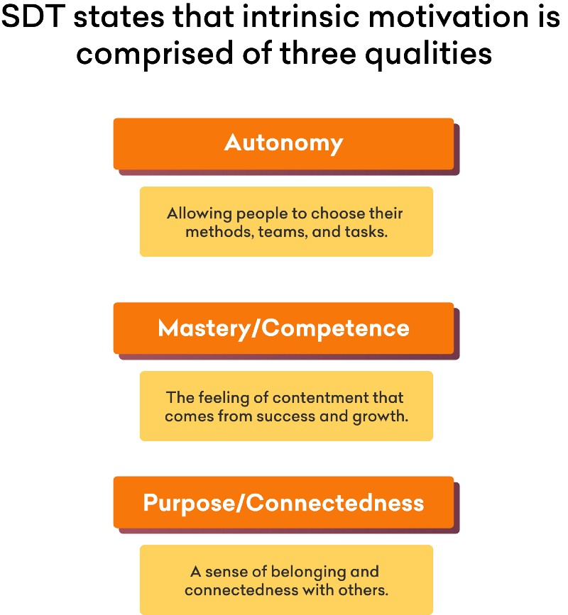

A guide to scaling tech organizations without adding too many people or processes.
I head product and engineering for Grofers, the largest online grocer in India. Grofers has grown by over 11x — from $60MM in GMV to nearly $700MM — in the last 24 months.
A big part of this success has been the ability of our team to go from idea to execution rapidly.
While we are leading the pack right now in terms of innovation and growth, we are competing offline with deep-pocketed giants like DMart and Reliance, and online with Alibaba (via Big Basket), Amazon and Walmart (via Flipkart).
We cannot outspend — we must out-innovate.
So I have two goals in my job: To scale and to innovate.
Unfortunately, these two goals are by nature opposing forces. The more people you add to systems, and the more complex you make those systems, the harder it is to move from idea to execution.
Ideas are not worth much now, there are few defensible positions and what few are there, do not remain long. It all comes down to who can differentiate fastest.
This article addresses how to scale the capabilities of a tech organization without adding too many people, or too many processes.
How do we retain the speed of a cheetah, when we become the size of an elephant?How do we take an idea to execution in a day, and to one million customers the following week?
The answer lies in both psychology and software. We’ll start with the psychology, then a story, and end with software.
The Psychology of Self-determination
The Self-Determination Theory (SDT) is a theory of what creates intrinsic motivation. While you can motivate people through reward and fear to some extent, innovation can only spring from intrinsic motivation — a desire to build for the sake of creative satisfaction and purpose.
SDT states that intrinsic motivation is comprised of three qualities:
- Autonomy: Allowing people to choose their methods, teams, and tasks.
- Mastery/Competence: The feeling of contentment that comes from success and growth.
- Purpose/Connectedness: A sense of belonging and connectedness with others.

This feels like common sense. So why are these often lacking in organizations, particularly scaled organizations? Process.
The Process Paradox
Even the most well-intentioned engineering and product leaders will hit a wall at some point of the organizational scale.
I’m going to call it the “Process Paradox:”
A small team with agile values will need processes to maintain those values as it scales. However, these processes will eventually become more powerful than the values they were trying to preserve. Click to tweet.
Or put another way:
- A large team without a process will get its focus only from a boss. At that point, the team no longer has intrinsic motivation and will not display creativity or agility.
- A large team with too much process will lose sight of the outcome they are after and will lose their ability to rapidly innovate and learn.
Here’s a totally realistic example.
Stage 1: The Garage
A long time ago, in a living room far, far away, a couple of motivated ex-colleagues and a 1/2 kilo of coffee spend a weekend hacking up the world’s first canine space travel engine, AstroMutt.
In one weekend, they went from a stupid idea to a ReactJS, functional, serverless, AI-driven, crypto-compliant stupid idea to find interstellar rides for your beloved pet.
Stage 2: Hackers paradise
Obviously they receive an eight-figure series A round the following Tuesday. Now, there is a team of 8 college friends and a VC who keeps talking about being more “defensible.”
At this stage, “process” is essentially syncing up over beers to talk about what you did today and scrambling to prepare for some conference or investor pitch last minute.
And good things happen.
New people get into different problems that interest them. They build rapidly — taking on all kinds of new technologies (without docs or support), deploying to cloud services (without tests), and generally gluing them all together (without standards).
The big launch day happens, and since there is no market for this awful idea, they write a blog post which goes on Hacker News, and they receive a $50MM Series B.
Stage 3: Scaling through horizontal teams
Now this new VC isn’t messing around. She wants dogs in space, and she wants them now. A few recruitment consultants are brought in and the ranks swell quickly to 40 engineers, product managers, designers, and marketing experts.
The system doesn’t know how to handle all of these people. You can’t really just hang out at the bar and discuss ideas with everyone, so they break them into teams.
One team for the backend, one for the mobile app, one for the website, one for the search engine, and one for infrastructure.
Soon, any given feature has to run through 4 teams that no longer get beers together anymore. There is uncertainty over who is responsible for what. Everyone is working, but nothing seems to gets released, and when it does, there are bugs and no one is sure who is responsible.
Everyone is still hacking away in their team with some autonomy, and within their team, there is some degree of connectedness. They may even get the sense that they are doing great work in their field and are getting recognized for their competence.
But the dogs are still sniffing butts right-side up. The results aren’t coming.
So more processes are added, and more people join the teams. We outsource QA to a company in some other country where dozens of people with exceptionally low levels of autonomy or sense of competence with no connection to the team or purpose are asked to “find the bugs before release”.
Nothing improves here, because the releases just take longer to happen now that we have one more handoff. And code quality starts to dive as people are no longer responsible for their own terrible code.
It’s looking dire. The competition is coming, and CatLaunchr has built the first sub-orbital feline slingshot. The internet goes wild and Giffy IPOs at $20Bn.
Management changes and consultants come in, and now you’ve got Scaled Agile Framework (TM, CSM, PMP, SOS, WTF, etc. etc…)
Stage 4: Agile, Scrum, disjointed teams and technical debt
Okay, so even though you think the Agile coach dude is a sales agent for 3M stickies, it’s still much better than before. The teams are split into x-functional units called pods. There is a search pod, a payments pod, an admin pod, etc…
These pods can build independently, but they still have to release together. There are fewer handoffs between web and backend, but it still requires a lot of collaboration and manual QA.
Now the teams still have the autonomy to work on whatever they want, but their sense of competence is waning. Every change to android requires coordination with the android engineers in every other pod.
Their autonomy to release as and when is also hindered by the fact that in order to harden each release, they need to adhere to the sprint schedule. This means ending at the same time as everyone else so they can pass off the team of Zombie Manual Testers(ZMTs).
They don’t invest in platforms and systems and cleaning up the old code, because that would delay their new features, and even if you wanted to, you’d need to get everyone on board from all the pods, and there are too many meetings already.
But shit’s getting done. Nothing amazing, but incremental improvements are starting to see the light of day sprint-by-sprint. There is a new tail length filter in search, you can specify in-flight kibble preferences, and you can pay using Dogecoin.
Stage 5: Scaling by adding bodies
Now it’s a job. People come in. People go out. They complain, they drink coffee… the system is the way it is. Many things are done stupidly. There is never time to refactor, and we need to hire another 30 engineers yesterday.
Every person we add, every team we add, increases the complexities of collaboration and innovation becomes a distant memory of a happier time.
Remember, the Process Paradox?
A small team with agile values will need processes to maintain those values as it scales. However, these processes will eventually become more powerful than the values they were trying to preserve. Click to tweet.
DevOps as underdog
DevOps: A catch-all term for tools and processes which allow for rapid, largely autonomous changes to a software system.
This includes topics such as infrastructure provisioning, automated testing for defects, automated integration of various systems, logging and alerting, and getting performance data from the system.
The common idea is that DevOps investments are to increase the reliability of software development and the speed of releases. While this is true, I would argue that these are actually secondary benefits.
The real benefit of a mature DevOps practice is the freedom it gives developers to innovate at the edges. Click to tweet.
Here are some ways the improvements to systems and better practices in development can solve for self-determination and unlock intrinsic motivation / radical innovation:
Automated testing — Autonomy and mastery
With a strong automated testing suite in place, teams have the autonomy to release as and when they complete something. They are also able to radically refactor code quickly, giving them a sense of mastery.
Continuous Integration — Connectedness and autonomy
A robust integration toolchain means multiple teams can stay synced up around status without meetings or project managers. This allows for complex multi-team innovation without a lot of central planning taking away autonomy.
Feature flagging, phased releases, and A/B testing platform — Mastery and autonomy
When teams can release a new feature to a limited amount of users and measure results independently, an organization can run several experiments in parallel. This exponentially increases the chances that they will discover innovations faster than their competition.
Containerization and automated environment builds — Autonomy and mastery
Making it easy for a developer to spin up custom staging environments means they are empowered to take greater risks and develop faster. Scripting deployments and infrastructure through tools like Ansible, Kubernetes, etc enable continuous deployment which frees up cycles for creative thinking instead of handling change.
Automated event analysis
Automating monitoring and alerting frees up the team to work on new ideas. It makes releasing faster, requiring less up-front testing. Again, enhancing autonomy and mastery
The Long tail
DevOps is putting management in code. It is automating the shitty meetings. Click to tweet.
What?! Yes. That’s what I said. DevOps as a school of thought and tools are there to replace the coordination and work quality check jobs that were traditionally done by managers.
How so?
Before we needed big group check-ins or PMs to release anything. However, with trunk-based development, multiple staging environments, and continuous integration, teams have greater visibility and don’t need as many meetings.
Before contract testing, each repository owner would need to find out who managed each input or output to their service and coordinate changes.
Before feature flagging, we had to plan each release meticulously.
Now with trunk-based development, multiple staging environments, and continuous integration, teams have greater visibility and don’t need as many meetings.
Rather than thinking of DevOps as a practice to enhance the productivity of developers, now I think of it as a way to deprecate the worst parts of management: the checker, the controller, the process cop.
DevOps is the only way out of the Process Paradox.
If you’re interested in learning more about Grofers and the work we are doing to create an elite agile team, please get in touch with me or attend one of our meetups (we run open-source meetups at our office regularly).
Open positions are listed here and you can follow me (@JacobSingh) on Twitter.